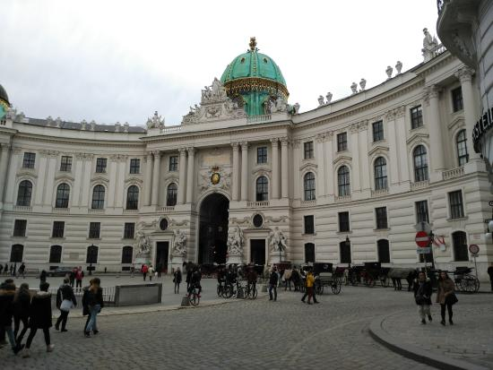
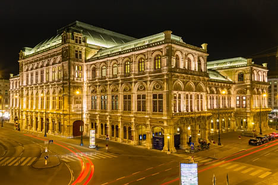
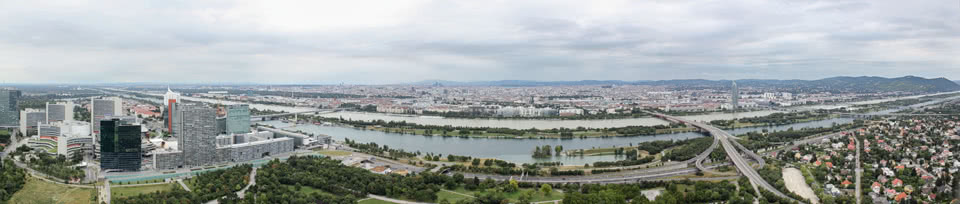

POČETNA |
ISTORIJA |
KULTURA |
POSETITI |
ANKETA |
Nekadašnja letnja rezidencija Habsburgovaca predstavlja najposećeniju turističku atrakciju Beča i mesto na kome se pisala istorija Austrije. Dvorac Šenbrun okružuju lepo uređeni vrtovi. Iznad palate na uzvišenju nalazi se Glorijet koji je nekada služio kao sala za prijeme a danas je pretvoren u kafić. Sa vrha Glorijeta se može videti kompleks Šenbruna i Beč. Dvorac Šenbrun je na listi UNESKO svetske baštine od 1996. godine. Šenbrun nije samo palata, vrtovi koji su deo kompleksa su prava oaza u sred grada. Ulaz u glavni, prostrani deo vrta je potpuno besplatan. U toku leta ogroman park je prepun sveća ali ne i tokom proleća kada ni mnoge fontane ne rade.Tokom božićnih i uskršnjih praznika ispred palate Šenbrun organizuje se sajam. Na 60-tak štandova osim rukotvorina iz cele Austrije nalazi se i bogata gastronomska ponuda. Osim Šenbrunskog uskršnjeg sajma koji se smatra za centralni poznat je i onaj na trgu Frajung.
Dvorac čine zapravo dve palate - Gornji i Donji Belveder i za ovaj dvorac neki tvrde da je najlepša barokna građevina na svetu. Raskošan vrt je prepun skulptura, fontana i vodenih kaskada a sa gornje palate se osim na vrt pruža prelep pogled na Beč pa otud i ime ovog dvorca Belvedere (lep pogled). Podignut je u 18. veku kao letnja rezidencija princa i velikog vojskovođe Eugena Savojskog. Danas je dvorac Belveder pretvoren u muzej. U gornjoj palati dvorca može se videti najveća kolekcija slikara Gustafa Klimta na svetu ali i delima umetnika kao što je francuski impresionista Klod Mone ili holandski postimpresionista Vinsent van Gog. Podignut je u XVIII veku kao letnja rezidencija princa i velikog vojskovođe Eugena Savojskog (1663–1736). Izgradnja donje palate počinje 1714. godine a u periodu 1720. do 1723. podignuta je gornja palata dvorca Belvedere. Zgrade su obnovljene posle teških oštećenja koje su pretrpele u bombardovanju Beča za vreme II svetskog rata. Hofburg je veliki kompleks rezidencija moćnog Habsburškoga carstva u centru Beča nastao u periodu od XIII do početka XX veka. Sve do kraja Prvog svetskog rata Hofburg je bio prestonica Habsburške monarhije. Deo Hofburga je zvanična rezidencija predsednika Republike Austrije, a veći deo je pretvoren u muzeje među kojima su: Odaja sa blagom, Carski apartmani, Muzej carice Sisi, Nacionalna biblioteka, Etnološki muzej, Efesov muzej, Muzej starih muzičkih instrumenata.U Hofburgu se čuva carska kruna Svetog Rimskog carstva. Muzej posvećen Sisi veoma živopisno oslikava život omiljene carice Elizabete od Bavarije poznatije kao Sisi koja je živela u periodu od 1837. do 1898. godine. Za cara Franju Josipa I se udaje 1854. godine koji je trebao da oženi njenu sestru ali se zaljubljuje u tada 15 godina staru Elizabetu. Carski par je živeo u dvorcu Šenbrun i u Hofburgu. Sisi je bila inteligentna, nadarena, izuzetno lepa a posebno su je zanimale književnost i istorija. U muzeju se nalazi preko 300 eksponata a neki od njih su lični predmeti carice Sisi poput rukavica i suncobrana. Među eksponatima je i rekonstruisana raskošna haljina kakvu je nosila sa 16 godina kada je napuštala Minhen. Jedna od soba je posvećena njenom ubistvu. Muzej je rekonstruisan 2009. godine kada je dobio i brojne nove eksponate. U kompleksu se nalazi i Španska škola jahanja (Spanische Reitschule) poznata po paradnim konjima lipicanerima i tradiciji od 450 godina. Sistematskim treningom stvara se vrhunska elegancija u kretanju ove divne životinje. Cene ulaznica za predstave su dosta visoke ali može se posetiti njihov trening za nekoliko puta manji iznos. Ova katedrala posvećena svetom arhiđakonu Stefanu nalazi se u centru Beča i sedište je bečke nadbiskupije. Prva crkva na ovom mestu je izgrađena 1147. godine ali je nekoliko puta rušena, prepravljana i nadograđivana a poslednju veliku rekonstrukciju doživljava posle velikih oštećenja tokom bombardovanja Beča 1945. godine. Katedrala Sv. Stefana je gotička građevina prepoznatljiva po karakterističnom krovu sa 200.000 crepova i ogromnom zvonu naziva Pumerin od 20 tona koje se nalazi u severnom tornju koje je treće zvono po veličini u Evropi. Staro Pumerin zvono izliveno je 1705 godine od 208 od ukupno 300 topova zarobljenih tokom turske opsade Beča. Novo zvono je izliveno 1951. od metala starog zvona uz dodatak metala od turskih topova iz vojnog muzeja. Moguće je popeti se na toranj katedrale visok 134m sa kojeg se pruža izuzetan pogled na grad Beč. Poseta tornju nije besplatna. Link sajta katedrale na sliku -----> Najpoznatija ulica u Beču (Ringstrasse) dugačka je 5km i kruži oko užeg gradskog jezgra. Često je nazivaju i samo Ring. Izgradnja je počela dekretom cara Franje Josipa I iz 1857. godine kada je doneta i odluka da se sruše gradski bedemi čime Beč dobija potpuno novi izgled. Na Ringštraseu se se nalaze mnogobrojne najznačajnije gradske znamenitosti poput zgrade Bečke državne opere, Parlamenta, Gradske kuće, Univerziteta, Berze, Muzeja istorije umetnosti, Prirodnjačkog muzeja, Muzeja primenjene umetnosti. Tu su i spomenici Geteu i Johanu Štrausu kao i parkovi Stadtpark i Rathauspark.Oni koje ne žele da hodaju duž ulice mogu je za 25 minuta obići tramvajem koji polazi sa Schwedenplatz-a na svakih pola sata. Muzej istorije umetnosti (Kunsthistorisches Museum) sadrži vrednu kolekciju umetničkih dela koju su habsburgovci sakupljali od 16-tog veka, a eksponati koji se mogu videti potiču od perioda antičkog Egipta pa do 18-tog veka. Posebno je vredna kolekcija slika starih majstora renesansnog i baroknog slikarstva italijanske, flamanske, nemačke i španske škole u kojoj su i dela Karavađa, Rafaela, Rubensa, Rembranta, Durera, Tintoreta. U sastav ovog muzeja danas ulaze i drugi veliki bečki i austrijski muzeji. Prirodnjački muzej (Naturhistorisches Museum) nalazi se na trgu Marije Terezije preko puta Muzeja istorije umetnosti i u zgradi je identičnog izgleda. Osnovan je davne 1889. godine a nastaje od kolekcije iz 18-tog veka. Jedan je od najvećih svetskih muzeja te vrste sa čak 500.000 eksponata. Glavna atrakcija muzeja je Venera iz Vilendorfa, mali ali vrlo ekspresivan kip star oko 29.500 godina. Muzej poseduje najveću i najstariju javnu kolekciju meteora na svetu. Bogate su i kolekcije minerala, dragog kamenja i retkih fosila. Pažnju posetilaca posebno privlače i kosturi dinosaurusa. O ovim muzejima je bilo reči na stranici o kulturi grada Beča.  Zgrada opere je izgrađena u stilu neorenesanse između 1861. do 1869. godine. Za vreme izgradnje zgrade Bečke državne opere visina ulice je podignuta za metar što je izmenilo izgled građevine i izazvalo još više negodovanja povodom izgleda opere. Prvobitno je nosila naziv Bečka dvorska opera. Sama zgrada nije previše dolazila do izražaja do Drugog svetskog rata kada je srušena monumentalna zgrada Heinrichshof preko puta Opere. Bečka državna opera otvorena je 15. maja 1869. izvođenjem opere “Kažnjeni razvratnik ili Don Đovani” iz 1787. godine najvećeg kompozitora klasicizma Mocarta koji je ovo delo smatrao svojom najozbiljnijom operom. Osim po bogatom repertoaru danas je poznata i po Operskom balu. Nalazi se u najpoznatijoj ulici u Beču (Ringstrasse) u blizini muzeja Albertina. Prvo je zdanje napravljeno na bečkom Ringu a deo ove ulice nosi i naziv po Operi(Opernring). Sama zgrada svojom lepotom pleni i osvaja svakog ljubitelja kulture i umetnosti koji poseti ovaj grad Karlov trg (Karlsplatz) je jedan od najprometnijih gradskih trgova i veliko saobraćajno čvorište. Trg se nalazi na dvestotinak metara od ulice Ringštrase.Na trgu se nalazi Karlova crkva (Karlskirche) u baroknom stilu sa elementima rokokoa podignuta 1737. godine. Centralni deo spoljnog dela crkve izgrađen je po uzoru na grčke antičke hramove. Izgradnju crkve pokreće Karlo VI nakon velike kuge iz 1712. godine. Smatra se najlepšom crkvom u Beču. Prater je veliki javni park. Svetska izložba 1873. godine je održana ovde. Veštačku lagunu koju zovu i “Venecija u Beču” dobija 1895.godine.U parku se nalazi preko 250 različitih atrakcija među kojima i železnica uskog koloseka, rolerkosteri, planetarijum i Prater muzej.Danas je simbol parka veliki točak iz 1879. godine visok 65 metara koji se i danas koristi i sa koga se pruža pogled na čitav Beč.Točak predstavlja jednu od najvećih atrakcija Beča i vrlo je čest motiv na suvenirima.Još jedan neobičan predmet koji se može naći u Viener Prateru je Republika Kugelmugel (Republika Kugelmugel), sferna mikronacija. Viener Prater takođe ima planetarijum i muzej Prater. Ime Prater potiče od jedne ili druge latinske reči pratum, što znači livada, i Praetora, odnosno sudije ili advokata, možda preko španskog prada ili italijanskog prata. Dunavski toranj (Donauturm) poznat je i pod nazivom Betonska igla i predstavlja vrlo popularnu turističku atrakciju sa godišnjom posetom od gotovo pola miliona posetilaca. Toranj je visok 252 metra i sa njega se pruža izvanredan pogled na grad Beč. Podignut je 1964. godine. Nalazi u Dunavskom parku (Donaupark) u modernom delu Beča između 21. i 22. bečkog okruga.Dva brza lifta posetioce voze do platforme za posmatranje na 150m visine za 35 sekundi. Sa platforme se vidi čitav Beč, a kada je vedro vreme i do 80km u daljinu.Na visini od 160 metara Dunavskog tornja nalazi se kafe a na 170 metara i restoran koji se kao i kafe okreće polako oko svoje ose. 
|
POČETNA |
ISTORIJA |
KULTURA |
POSETITI |
ANKETA |